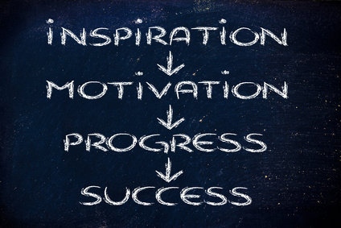

Express Yourself in Your Career
Recently I've been doing a fair bit of, 'what if' thinking around my career choices from when I first started, and how the landscape looks today.
Note: I originally posted this article on MS Gooroo in their win a Surface Pro 3 competition. My article was one of the winners! The original can be found here.
A bit of background
During university I dabbled in a few languages in order to complete the course work - C, VB6, Java, and a little bit of Haskell. But, I certainly was never very proficient in any of these languages. When I moved into the job market there were very few junior development jobs (due to the after effects of the dot-com bubble bursting, NASDAQ crash, etc). I had many university colleagues that for a time gave up on IT and I ended up on an ISP hell-desk.
After a long, fraught, and painful 18 months I finally managed to pick up a development job overseas in Sydney (I’m a kiwi) through a friend developing in VB.Net at a start-up. I spent 3 ½ years working on a really cool product often getting quite deep into the .Net framework in order to do things which at the time had very little in the way of documentation or knowledge. I felt like a cowboy and I loved it.
VB.Net was comfortable, but I wasn’t in love. Thankfully, breakups with computer languages are generally less emotional draining than breakups with romantic partners and after working at the start-up I moved on to C#. It felt closer to what I wanted, but while I like it, I’ve never really developed ‘nerd chills’ while using the language.
Where I am at now
Over the last 6 or so months I’ve been teaching myself Xamarin (cross platform development for iOS, OS X, and Android using .Net) in my own time. Additionally, for the last couple of months I’ve been using F# at work.
After over ten years in the IT industry I’ve finally found a language I actually love. Coupled with this, my playing with Xamarin has left me exposed to completely different tool chains, design philosophies, and a different pool of the development community that I never really acknowledged or interacted with.
Clearly, the progression from VB.Net to C#, to F# is not particularly startling. But the shift from OO to functional, along with working with toolsets from different vendors has left me wondering, what have I missed out on?
Missed signposts
I think there have been a number of points in my career where realistically speaking I should have come up for breath and taken a look at the landscape.
The point where I moved on from VB.Net, when iPhones became a thing, when making technology choices for my own start-up, and plenty more.
When smart phones really hit the consumer market, I told myself that I didn’t want to learn Java or Objective C because with no real prior knowledge I felt that they were sub-par to C#. They were ‘yuck’ and I didn’t want to dirty myself by learning them. I was also worried about hurting future career prospects as I might no longer be perceived as a specialist.
I really wonder if I shot myself in the foot when I took this view. After dabbling in Xamarin I didn’t find Java that bad, and while I still struggle to even comprehend Objective C the tooling Apple provides around iOS isn’t all that bad.
What if?
Think back to your own career. Have there been moments when you could have shifted sails and potentially be in a completely different position to where you are now?
What if I’d taken the plunge and learnt iOS / Android development when the hype began? Would I now be using a café as my office while looking at download reports from the Apple Store?
What if I’d ignored the dire warnings of brutal hours for little reward and become a game developer? Would I now be trying to get my game up on Steam Greenlight, or starting a Kickstarter campaign for my own take on Space Invaders?
What if I’d become a JavaScript guru, would I also have my very own JavaScript framework that you can download from my GitHub repository? No, probably (hopefully) not. What would happen if I decided to take my career in a completely different direction now?
Expressing Ourselves
As developers there are two ways that we can express ourselves.
In code - the way we describe our logic, the design, and architecture that we use in order to solve a problem. The beauty in the way that we craft our code such that another developer can understand and appreciate what we have done.
In the end product – simply put, it is all about feeling the love. Can I as an end user feel that the product you are shipping is loved, and is crafted with care? Obviously in larger organizations there are constraints around what the product owner wants, or the UX team (if there is one) decides. But I pretty much guarantee you, that for each product that you look at, or use, you can get an appreciation for how much love and care was put into it. It may just be a spreadsheet application, but are there any nice little touches that were put in place to make my life easier as I document and compile the latest 921, 552 survey results from the Justin Bieber fan club.
How is expression relevant to your career?
The capacity of being able to express yourself is something that I have only recently really started to really appreciate. Its importance seems kind of obvious, but at the same time it gets sacrificed far too easily.
The ability for someone to express one’s self has a direct impact on your motivation, drive, and pride in what you do. And these three factors have a direct impact on your career.
All too often I see developers that could be brilliant, but due to poor choices and low confidence they have managed to dig themselves into a hole.
I guarantee you that almost every developer got into this business because they wanted to create, or be part of something cool. I doubt your accountant can say that.
Taking inspiration from elsewhere

Artists and designers do this all of the time. It is something I have started to do as well. There are so many great minds in our industry and I actually find it interesting to look at something, see (or guess if I don’t have access to the code) how it was done, possibly take that idea, and move it into another direction.
For example, at work for a client we needed to write a highly customized object mapping component (like AutoMapper, but different). I’d played with ReactiveUI in the past and I wanted to see if I could create a similar API to what it uses when binding objects. I took looked at how the ReactiveUI contributors had implemented binding and wrote it using F# in a manner that made sense to the component I was writing. I was super happy with the end result, a mapper with highly customized logic, but so declarative in nature that it would be easy for someone like a BA to look at the code and understand what was going on.
Stop being so bloody narrow minded
I think that most of us are guilty of this in one way or another. We get caught up in our favourite language, platform, tool, or product that sometimes we can’t see the big picture. There is often value in learning something, not because you necessarily adopt it, but because you learn something new that you can take elsewhere.
Notable members of the community such as Martin Fowler actually recommend that developers learn one language a year.
There is no I in team
Most of us work in teams, and it is important that the developers, and the software they are writing is on the same plan. A parallel I would draw is with the props team in a movie. They need to fulfil a set of requirements, and there generally multiple creative expressive individuals on the team, but their end goal is to provide one cohesive, and hopefully awesome set of props to support the movie.
Language and expression
I’m going to preface this by declaring that I am not a language guy. If you go all computer science on me in a conversation and start talking compilers, computational theory, or mathematics I am likely to merely nod and grunt in your general direction until the conversation goes elsewhere. (Hopefully, the glaze over my eyes isn’t too obvious, I wouldn’t want to be rude)
I’m going to close up by talking about language. But a lot of these general concepts can also apply to tools and platform which are equally, if not more relevant in terms of how we express ourselves.
Language is very important to a developer it is how they that take that mental picture of how they are going to construct something and convert it into a form that later can be turned into machine code. It is the description of their thought processes, and through it, it articulates not just to the machine but to other developers how the logic should flow.
Understandably, developers get very passionate about language. There is great division across the development community in terms of what language is the best, and at the same time, each language has its own strengths and weaknesses.
I am a big believer that we are the sum of our experiences. If I hadn’t started out as a .Net developer, if I had a broader appreciation of different programming languages, if I started my career only two years ago - would I still be a .Net developer? I honestly don’t know if I would be.
Don't be blind to the real problems
I said I wanted to close off with language, but I lied. One final caveat in all of this is I often hear people complain that if we had used language X or tool Y that we wouldn’t be in this position.
More often than not that is a fallacy. You are more likely to be in in that position because of some combination of not architecting and designing your application correctly, allowing technical debt to get out of control, or some breakdown in the software development process and methodologies being used.
Conclusion
The languages and tools that you use are just the physical constructs supporting the thought processes of you and your fellow team members. Some tools and languages better articulate what you are trying to achieve and everyone is different.
So stand up for a moment, take a look around, and make sure that this is still where you really want to be.